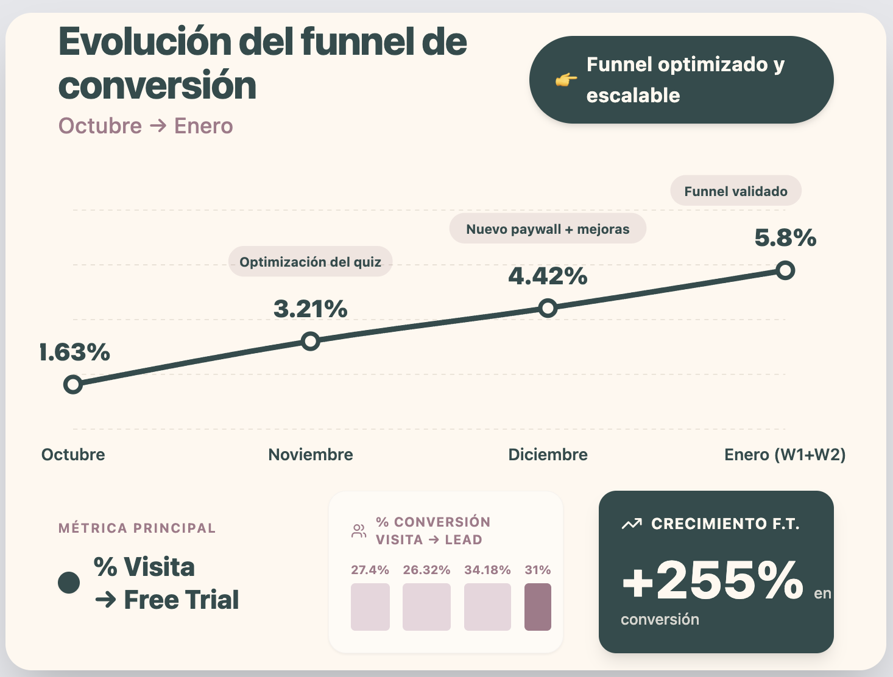

Caso de Éxito · Xuan Lan Yoga
De 1,63% a 5,8% de conversión — +255% de crecimiento

Con 99% de tráfico orgánico y sin invertir un euro en paid.
Contexto
XLY ya tenía lo que muchas marcas sueñan
- Comunidad sólida — seguidores fieles y activos
- Autoridad de marca — referente en yoga en habla hispana
- Contenido premium — clases, programas, estilos, niveles
- Identidad potentísima — equilibrio, conciencia, minimalismo
- Tráfico orgánico fuerte — YouTube, blogs, SEO, redes


Lo primero que hicimos
Antes de diseñar nada, nos sentamos a entender
No una auditoría superficial.
Una auditoría de por qué el usuario no convertía.
Y lo que encontramos fue revelador.

La solución
De exploración libre a acompañamiento guiado
Un recomendador estratégico usando Web2App Funnel — quiz integrado con la app de XLY, diseñado para convertir canales orgánicos en free trials.
Recomendador estratégico
Detecta nivel, objetivo, momento vital y estado emocional.
Recomendación personalizada
Muestra dirección, no opciones. Acompañamiento, no presión.
Checkout integrado
Quiz + paywall en un solo flujo, sin saltos.

Estructura del quiz
Cada paso con propósito
Nivel, frecuencia
"Vamos bien"
Estrés, flex, fuerza
Beneficios
Plan personal
Registro + pago


Ejecución paso a paso
Medir el punto de partida
Dónde entraban, dónde se caían. Conversión por etapa, tasa de abandono, tiempo en cada paso.
Diseñar las preguntas
Cada pregunta con objetivo psicológico: compromiso progresivo, reducir riesgo percibido, crear acompañamiento.
Montar Web2App como análisis
Funnel en tiempo real. Tracking por etapa: quiz iniciado, pregunta completada, resultado, registro, pago.

Ejecución paso a paso
Conectar canales orgánicos
YouTube, blogs, SEO, redes — CTA directo al quiz. No creamos contenido nuevo. Activamos el existente.

Leer resultados y ajustar
Cada ajuste quirúrgico: cambiar un copy, reordenar una pregunta, simplificar un paso. Las métricas no solo medían — dirigían.
Escalar
Activar la base de datos existente — CRM, emails. Primero el sistema. Después la escala. Nunca al revés.

Si te resuenan estos problemas y te interesan las soluciones…
Agenda una llamada
Hablemos para ver si cualificas y cómo podemos
montar el sistema para tu marca.
Growth4U Systems · Trust Engine